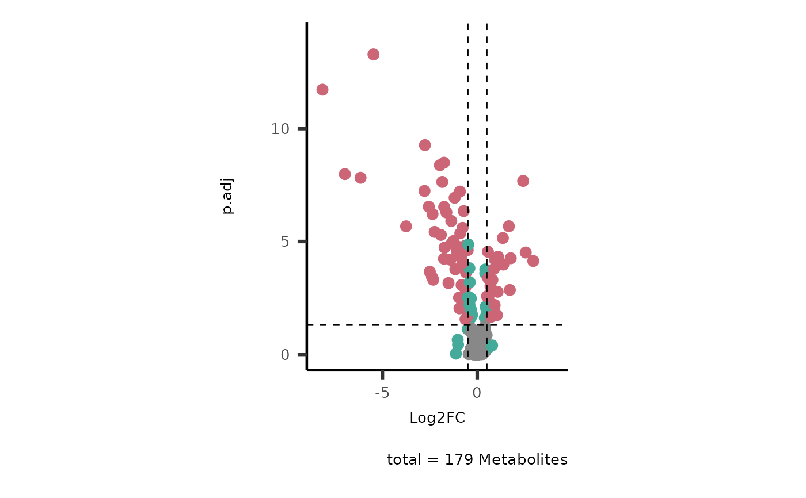

This script allows you to perform different data visualizations using the results of the MetaProViz analysis Volcano plot visualization
Source:R/VizVolcano.R
viz_volcano.RdThis script allows you to perform different data visualizations using the results of the MetaProViz analysis Volcano plot visualization
Usage
viz_volcano(
plot_types = "Standard",
data,
metadata_info = NULL,
metadata_feature = NULL,
data2 = NULL,
y = "p.adj",
x = "Log2FC",
xlab = NULL,
ylab = NULL,
cutoff_x = 0.5,
cutoff_y = 0.05,
connectors = FALSE,
select_label = "",
plot_name = "",
subtitle = "",
name_comparison = c(data = "Cond1", data2 = "Cond2"),
color_palette = NULL,
shape_palette = NULL,
theme = NULL,
save_plot = "svg",
path = NULL,
feature = "Metabolites",
print_plot = TRUE
)Arguments
- plot_types
Optional: Choose between "Standard" (data), "Compare" (plot two comparisons together data and data2) or "PEA" (Pathway Enrichment Analysis) Default = "Standard"
- data
DF with metabolites as row names and columns including Log2FC and stat (p-value, p.adjusted) value columns.
- metadata_info
Optional: NULL or Named vector including at least one of those three information for Settings="Standard" or "Compare": c(color ="ColumnName_metadata_feature", shape = "ColumnName_metadata_feature", individual="ColumnName_metadata_feature"). For Settings="PEA" a named vector with: PEA_Pathway="ColumnName_data2"=each pathway will be plotted, PEA_score="ColumnName_data2", PEA_stat= "ColumnName_data2"= usually p.adj column, "PEA_Feature="ColumnName_data2"= usually Metabolites), optionally you can additionally include c(color_Metab="ColumnName_metadata_feature", shape= "ColumnName_metadata_feature").Default = NULL
- metadata_feature
Optional: DF with column including the Metabolite names (needs to match Metabolite names and Metabolite column name of data) and other columns with required plot_typeInfo. Default = NULL
- data2
Optional: DF to compare to main Input_data with the same column names x and y (Settings="Compare") and metabolites as row names or Pathway enrichment analysis results (Settings="PEA"). Default = NULL
- y
Optional: Column name including the values that should be used for y-axis. Usually this would include the p.adjusted value. Default = "p.adj"
- x
Optional: Column name including the values that should be used for x-axis. Usually this would include the Log2FC value. Default = "Log2FC"
- xlab
Optional: String to replace x-axis label in plot. Default = NULL
- ylab
Optional: String to replace y-axis label in plot. Default = NULL
- cutoff_x
Optional: Number of the desired log fold change cutoff for assessing significance. Default = 0.5
- cutoff_y
Optional: Number of the desired p value cutoff for assessing significance. Default = 0.05
- connectors
Optional: TRUE or FALSE for whether connectors from names to points are to be added to the plot. Default = FALSE
- select_label
Optional: If set to NULL, feature labels will be plotted randomly. If vector is provided, e.g. c("MetaboliteName1", "MetaboliteName2"), selected names will be plotted. If set to default "", no feature names will be plotted. Default = ""
- plot_name
Optional: String which is added to the output files of the plot. Default = ""
- subtitle
Optional: Default = ""
- name_comparison
Optional: Named vector including those information about the two datasets that are compared on the plots when choosing Settings= "Compare". Default = c(data="Cond1", data2= "Cond2")
- color_palette
Optional: Provide customiced color-palette in vector format. Default = NULL
- shape_palette
Optional: Provide customiced shape-palette in vector format. Default = NULL
- theme
Optional: Selection of theme for plot, e.g. theme_grey(). You can check for complete themes here: https://ggplot2.tidyverse.org/reference/ggtheme.html. Default = NULL
- save_plot
Optional: Select the file type of output plots. Options are svg, pdf, png or NULL. Default = "svg"
- path
Optional: Path to the folder the results should be saved at. default: NULL
- feature
Optional: Name of the feature that are plotted, e.g. "Metabolites", "RNA", "Proteins", "Genes", etc. Default = "metabolites"
- print_plot
Optional: print the plots to the active graphic device.
Examples
Intra <- intracell_dma%>%tibble::column_to_rownames("Metabolite")
Res <- MetaProViz::viz_volcano(data=Intra)
